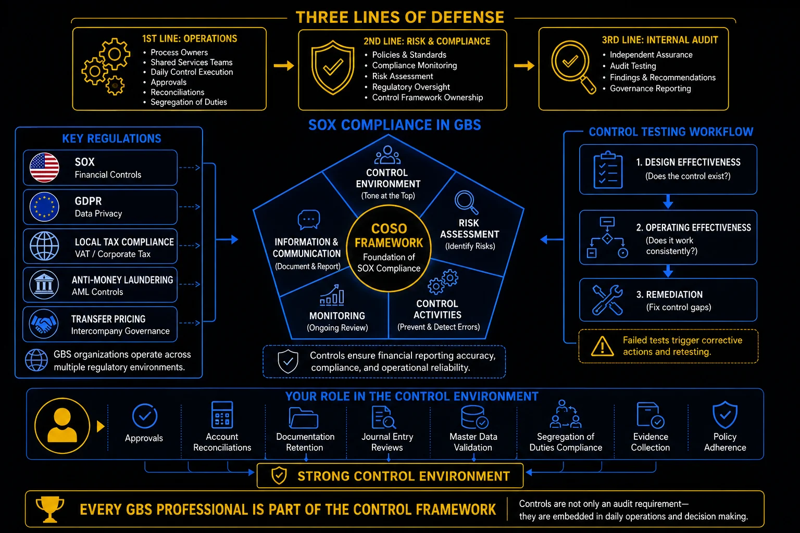

Pillar 9 · Cluster 2
Regulatory compliance and internal controls
Segregation of duties, GDPR, SOX, AML, and document retention are the compliance guardrails that every GBS professional operating in finance, HR, or procurement must understand and follow.

Three lines of defense, SOX compliance, and the COSO framework
Topic 01 · Access Controls
Segregation of Duties and toxic combinations
No single person should be able to create a vendor, enter an invoice, approve the payment, and execute the bank transfer. SoD prevents fraud by splitting critical actions across different individuals.
- Vendor master creation + invoice entry — the same person could create a fictitious vendor and process payments to them
- Purchase order creation + goods receipt — the same person could order goods and confirm receipt without physical verification
- Journal entry posting + journal entry approval — the same person could create and authorize fraudulent entries
- Payment execution + bank reconciliation — the same person could divert payments and hide the discrepancy
- User access administration + transaction processing — the same person could grant themselves excessive access and use it
SoD is straightforward in large GBS centers with hundreds of employees. It becomes genuinely difficult in small teams where there are not enough people to split every function. The answer is compensating controls that mitigate the risk when full segregation is not possible:
- Additional review steps
- Management approvals
- Exception reporting
- Audit trail monitoring
Three lines of defense — operations, risk & compliance, internal audit
Topic 02 · Regulatory Frameworks
GDPR and SOX — the two compliance pillars
GDPR governs how you handle personal data. SOX governs the accuracy and integrity of financial reporting. Both carry severe consequences for violations.
Scope and focus
- Protects personal data of EU residents
- Applies to any organization processing EU personal data
- Enforcement: fines up to 4% of annual global revenue
- Key requirements: consent, data minimization, right to erasure, breach notification within 72 hours
Scope and focus
- Ensures accuracy of financial reporting for US-listed companies
- Applies to the company and all entities that contribute to consolidated financial statements
- Enforcement: criminal penalties including imprisonment for executives
- Key requirements: internal controls over financial reporting (ICFR), management assessment, external auditor attestation
COSO framework — foundation of SOX compliance in GBS
Topic 03 · Financial Crime
AML and sanctions screening basics
Anti-Money Laundering and sanctions compliance are not just for banks. GBS centers processing payments, onboarding vendors, or managing customer data have screening obligations.
- Know Your Customer (KYC) / Know Your Vendor (KYV) — verify the identity and legitimacy of business partners before entering into financial relationships
- Sanctions screening — check all counterparties against government sanctions lists (OFAC, EU, UN) before processing payments
- Suspicious Activity Reporting (SAR) — obligation to report transactions that appear unusual, structured, or inconsistent with known business patterns
- Transaction monitoring — automated rules that flag payments above thresholds, to high-risk jurisdictions, or with unusual patterns
- Record retention — maintain transaction records and screening results for the period required by applicable regulations (typically 5-7 years)
Topic 04 · Records Management
Document retention and archiving policies
Keeping documents too long creates liability. Deleting them too early creates compliance violations. Retention policies define the rules for every document type.
- Financial records (invoices, journals, ledgers) — typically 7-10 years depending on jurisdiction and tax requirements
- Employee records — varies by type: payroll records 7 years, personnel files 3-7 years after termination, medical records per local regulation
- Contracts — duration of contract plus 6-10 years for potential dispute resolution
- Tax records — minimum 7 years in most jurisdictions; longer in some countries
- Correspondence and emails — follow organizational policy; default to 3-5 years unless litigation hold or regulatory requirement applies
Two rules pull in opposite directions — and you need both.
- GDPR requires data minimization and storage limitation: do not keep personal data longer than necessary.
- Tax and financial regulations require long retention periods for records that contain personal data.
- These requirements conflict. The resolution is purpose-based retention: keep only the data elements required for the regulatory purpose, for the minimum period required, with appropriate access controls.
Your role — approvals, reconciliations, documentation, compliance
The teams that breeze through audits have one thing the others don't: a dedicated function — even part-time resources — that owns audit readiness year-round, not just during audit season.
- → Their job: maintain documentation, prepare samples, and guide both auditors and the audited team through sampling and interviews.
- → During the year they support management testing for SOX 404.
- → During the audit they clarify and dispute potential findings before they get formally written up — that's where the real damage prevention happens.
- → Good partnership with auditors matters more than most people realize: smooth collaboration means faster progress, fewer surprises, and cleaner outcomes for everyone.
Reference
Glossary
Full glossary at the GBS Insider Club Field Guide.
- Sarbanes-Oxley Act — Section 404 requirements
- European Data Protection Board — GDPR enforcement and guidance
- FATF — Recommendations on Anti-Money Laundering, 2023
- IRS — Record retention requirements for businesses
- ISACA — COBIT framework for IT governance and controls
Knowing the frameworks is the entry ticket. Applying them — visibly, at your actual job — is what gets you promoted.
The GBS Insider Club Career Paths turn this theory into a guided 90-day program for your role: self-assessment, practical exercises, templates, and Julian's unfiltered practitioner playbook.
Explore the Career Paths → Back to Compliance and Risk